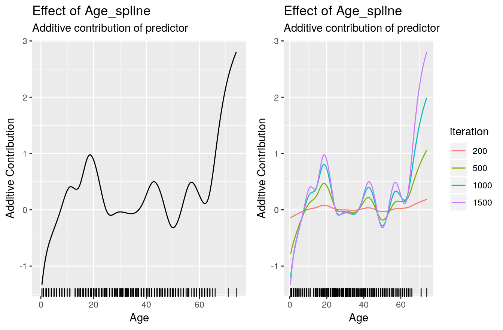
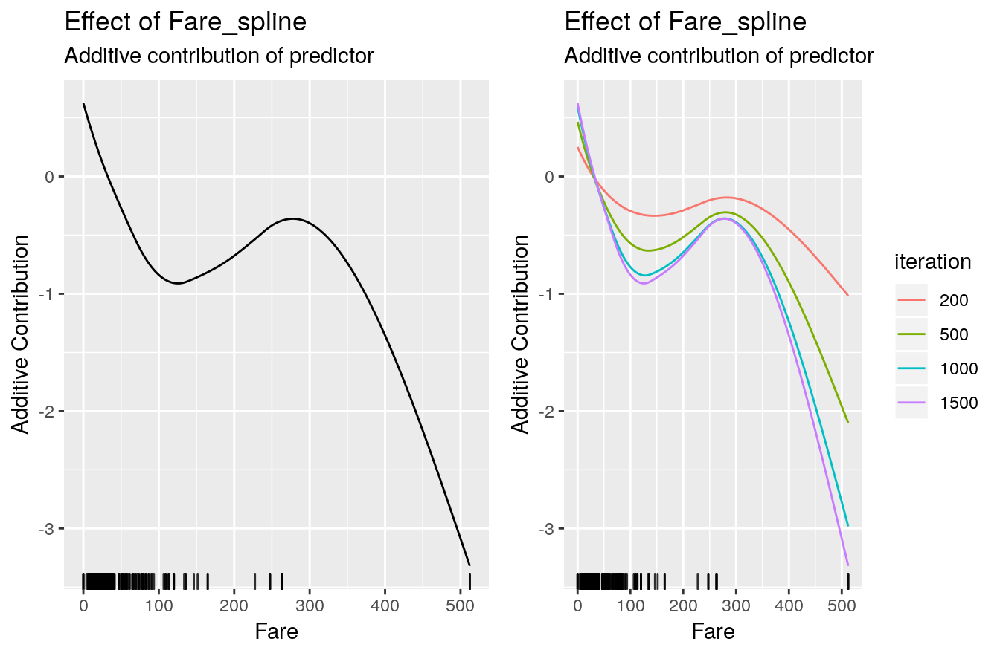

compboost.RmdWe use the titanic dataset with binary classification on survived. First of all we store the train and test data in two data frames and remove all rows that contains NAs:
# Store train and test data:
df.train = na.omit(titanic::titanic_train)
df.test = na.omit(titanic::titanic_test)
str(df.train)
## 'data.frame': 714 obs. of 12 variables:
## $ PassengerId: int 1 2 3 4 5 7 8 9 10 11 ...
## $ Survived : int 0 1 1 1 0 0 0 1 1 1 ...
## $ Pclass : int 3 1 3 1 3 1 3 3 2 3 ...
## $ Name : chr "Braund, Mr. Owen Harris" "Cumings, Mrs. John Bradley (Florence Briggs Thayer)" "Heikkinen, Miss. Laina" "Futrelle, Mrs. Jacques Heath (Lily May Peel)" ...
## $ Sex : chr "male" "female" "female" "female" ...
## $ Age : num 22 38 26 35 35 54 2 27 14 4 ...
## $ SibSp : int 1 1 0 1 0 0 3 0 1 1 ...
## $ Parch : int 0 0 0 0 0 0 1 2 0 1 ...
## $ Ticket : chr "A/5 21171" "PC 17599" "STON/O2. 3101282" "113803" ...
## $ Fare : num 7.25 71.28 7.92 53.1 8.05 ...
## $ Cabin : chr "" "C85" "" "C123" ...
## $ Embarked : chr "S" "C" "S" "S" ...
## - attr(*, "na.action")= 'omit' Named int 6 18 20 27 29 30 32 33 37 43 ...
## ..- attr(*, "names")= chr "6" "18" "20" "27" ...In the next step we transform the response to a factor with more intuitive levels:
df.train$Survived = factor(df.train$Survived, labels = c("no", "yes"))
# Train and evaluation split for training:
set.seed(1111)
idx.train = sample(x = seq_len(nrow(df.train)), size = 0.6 * nrow(df.train))
idx.eval = setdiff(seq_len(nrow(df.train)), idx.train) This split will be used while the training to calculate the out of bag risk.
Due to the R6 API it is necessary to create a new class object which gets the data, the target as character, and the used loss. Note that it is important to give an initialized loss object:
cboost = Compboost$new(data = df.train[idx.train, ], target = "Survived",
loss = LossBinomial$new())Use an initialized object for the loss gives the opportunity to use a loss initialized with a custom offset.
Adding new base-learners is also done by giving a character to indicate the feature. As second argument it is important to name an identifier for the factory since we can define multiple base-learner on the same source.
For instance, we can define a spline and a linear base-learner of the same feature:
# Spline base-learner of age:
cboost$addBaselearner("Age", "spline", BaselearnerPSpline)
# Linear base-learner of age (degree = 1 with intercept is default):
cboost$addBaselearner("Age", "linear", BaselearnerPolynomial)Additional arguments can be specified after naming the base-learner. For a complete list see the functionality at the project page:
This logger logs the elapsed time. The time unit can be one of microseconds, seconds or minutes. The logger stops if max_time is reached. But we do not use that logger as stopper here:
The out of bag risk logger does basically the same as the inbag risk logger but calculates the empirical risk using another data source. Therefore, the new data object have to be a list with data sources containing the evaluation data. This is automatically done by the prepareData() member of Compboost:
After defining all object we can train the model:
cboost$train(1000, trace = 50)
## 1/1000: risk = 0.67 0.52: 1:
## 50/1000: risk = 0.61 0.53: 4461:
## 100/1000: risk = 0.57 0.59: 9170:
## 150/1000: risk = 0.55 0.65: 13585:
## 200/1000: risk = 0.54 0.69: 17881:
## 250/1000: risk = 0.52 0.73: 22251:
## 300/1000: risk = 0.52 0.77: 26637:
## 350/1000: risk = 0.51 0.80: 31431:
## 400/1000: risk = 0.51 0.82: 35776:
## 450/1000: risk = 0.5 0.85: 40145:
## 500/1000: risk = 0.5 0.87: 44624:
## 550/1000: risk = 0.5 0.89: 49061:
## 600/1000: risk = 0.5 0.91: 53483:
## 650/1000: risk = 0.49 0.93: 57981:
## 700/1000: risk = 0.49 0.94: 62595:
## 750/1000: risk = 0.49 0.95: 67269:
## 800/1000: risk = 0.49 0.96: 71810:
## 850/1000: risk = 0.49 0.97: 76477:
## 900/1000: risk = 0.49 0.98: 81072:
## 950/1000: risk = 0.49 0.99: 85689:
## 1000/1000: risk = 0.49 1.00: 90332:
##
##
## Train 1000 iterations in 0 Seconds.
## Final risk based on the train set: 0.49
cboost
## Component-Wise Gradient Boosting
##
## Trained on df.train[idx.train, ] with target Survived
## Number of base-learners: 5
## Learning rate: 0.05
## Iterations: 1000
## Positive class: no
## Offset: 0.2529
##
## LossBinomial Loss:
##
## Loss function: L(y,x) = log(1 + exp(-2yf(x))
##
## Object of the Compboost class do have member functions such as getEstimatedCoef(), getInbagRisk() or predict() to access the results:
str(cboost$getEstimatedCoef())
## List of 5
## $ Age_spline : num [1:24, 1] -2.5721 -1.0457 -0.4804 -0.0319 0.3728 ...
## $ Fare_spline : num [1:17, 1] 0.969 0.215 -0.291 -0.704 -0.864 ...
## $ Sex_female_categorical: num [1, 1] -1.33
## $ Sex_male_categorical : num [1, 1] 0.836
## $ offset : num 0.253
str(cboost$getInbagRisk())
## num [1:1001] 0.67 0.668 0.666 0.664 0.663 ...
str(cboost$predict())
## num [1:428, 1] 1.86 -1.481 1.553 -0.816 1.467 ...To obtain a vector of selected learner just call getSelectedBaselearner()
table(cboost$getSelectedBaselearner())
##
## Age_spline Fare_spline Sex_female_categorical
## 315 211 287
## Sex_male_categorical
## 187We can also predict on new data to get estimated probabilities. Therefore we have to use response = TRUE:
To set the whole model to another iteration one can easily call train() to another iteration:
cboost$train(1500)
##
## You have already trained 1000 iterations.
## Train 500 additional iterations.
str(cboost$getEstimatedCoef())
## List of 5
## $ Age_spline : num [1:24, 1] -3.5358 -0.998 -0.4564 -0.0534 0.5817 ...
## $ Fare_spline : num [1:17, 1] 1.012 0.236 -0.294 -0.764 -0.94 ...
## $ Sex_female_categorical: num [1, 1] -1.42
## $ Sex_male_categorical : num [1, 1] 0.838
## $ offset : num 0.253
str(cboost$getInbagRisk())
## num [1:1501] 0.67 0.668 0.666 0.664 0.663 ...
table(cboost$getSelectedBaselearner())
##
## Age_spline Fare_spline Sex_female_categorical
## 655 277 378
## Sex_male_categorical
## 190
# Get confusion matrix:
prob.newdata = cboost$predict(df.train[idx.eval, ], response = TRUE)
table(df.train[idx.eval, "Survived"], ifelse(prob.newdata > 0.5, "no", "yes"))
##
## no yes
## no 131 26
## yes 39 90To visualize a base-learner it is important to exactly use a name from getBaselearnerNames():
gg1 = cboost$plot("Age_spline")
gg2 = cboost$plot("Age_spline", iters = c(50, 100, 500, 1000, 1500))
gg1 = cboost$plot("Age_spline")
gg2 = cboost$plot("Age_spline", iters = c(50, 100, 500, 1000, 1500))